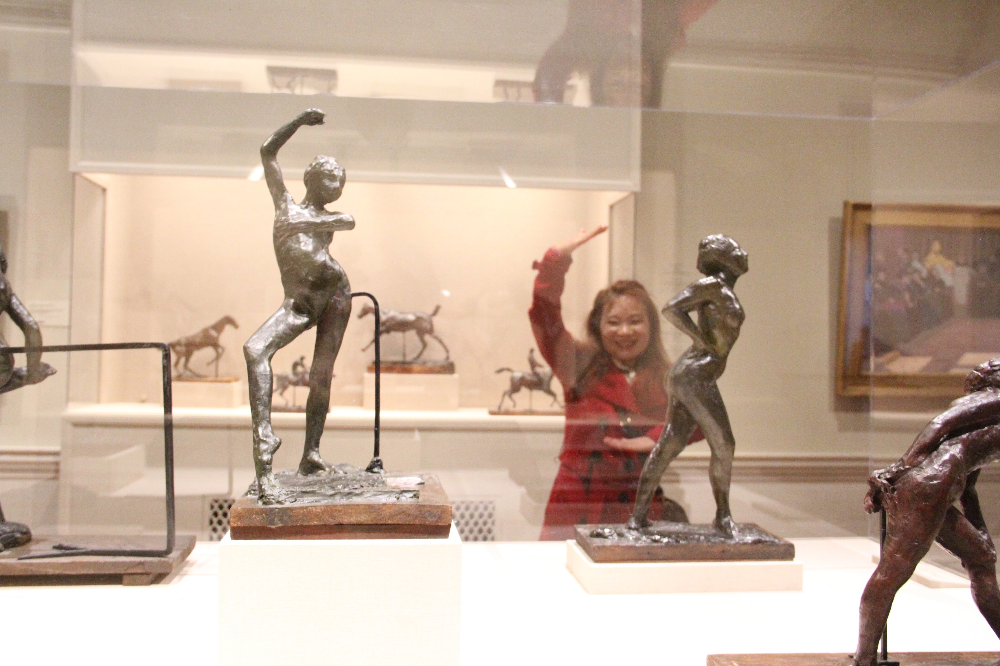
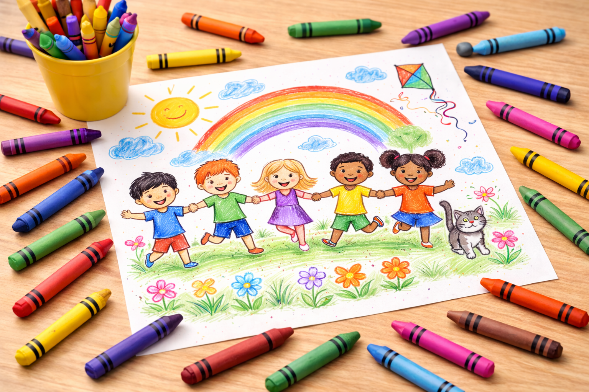
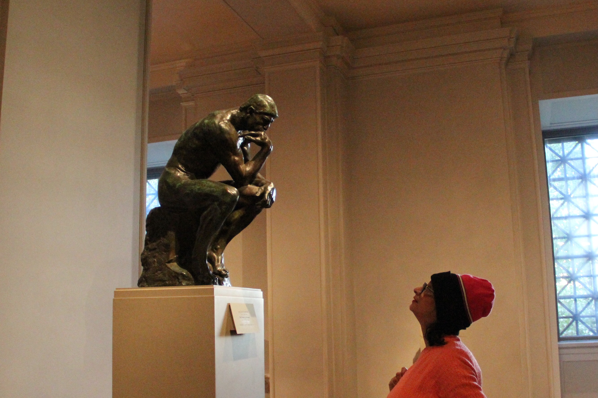

ITD 210 • Mary's Demo
Welcome to A Time Traveler's Journey through Art.
Discover some of history's greatest artists of the 19th Century which was a time of great advances in art.
Welcome to my page.
Feel free to visit this site for inspiration and to discover more about art.


Children's page
Future Young Artist Time Travelers
A special page dedicated to our young future artists.
Children's page